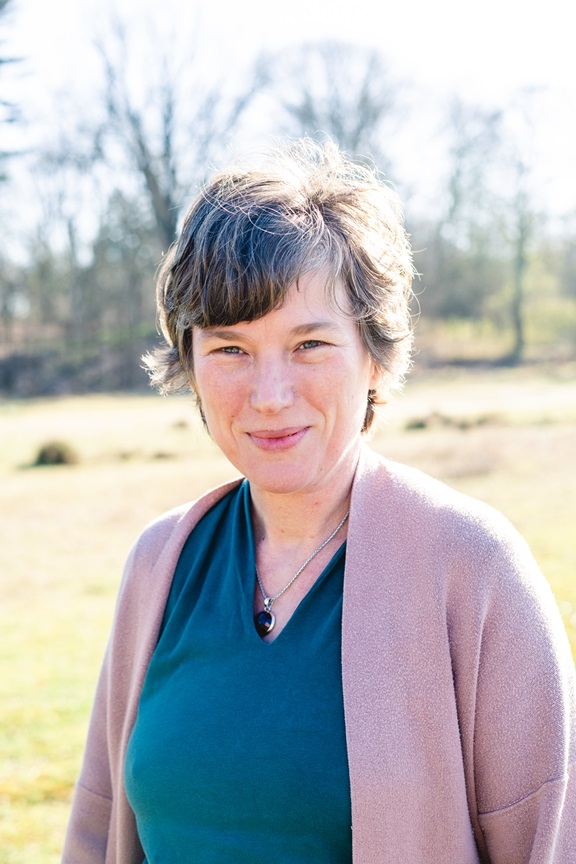

Ellen Grootoonk (1972)
Het leven met autisme kan een behoorlijke uitdaging zijn. Soms heb je daar een steuntje in de rug bij nodig. Iemand die met je meedenkt, luistert en aansluit bij jouw behoefte. Ieder mens is uniek en daarom bied ik maatwerk. Ik ondersteun jou om jezelf beter te begrijpen en om jouw leven vorm te geven. Ik heb daarbij aandacht voor zingeving, voor datgene wat het leven de moeite waard maakt.
Werkervaring
- Autismecoach (zzp)
- Persoonlijk begeleider autisme bij een locatie voor beschermd wonen
- Hogeschooldocent en onderzoeker sociaal werk
Opleidingen
- Post-HBO autismedeskundige bij Autisme Centraal
- Universiteit voor Humanistiek
- Diverse bijscholingen op het gebied van autisme
- EVC-standaard vakbekwame sociaal werken op HBO-niveau
- Agogisch werk
Kwaliteitseisen
- Aangesloten bij KIWA
- Aangesloten bij Klachtenportaal Zorg